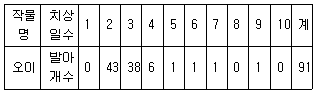
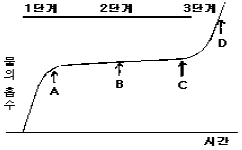
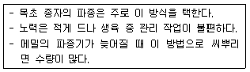

종자기능사 (2004-07-18 기출문제)
1과목: 종자(임의구분)
1. 치상일수별로 오이의 발아개체수를 조사하였다. 평균 발아 기간으로 알맞은 것은?

- 1.76일
- 2.76일
- 3.76일
- 4.76일
(정답률: 61%)

2. 과채류의 채종과는 추숙시키는 것이 일반적인데 그 주된 목적은 무엇인가?
- 채종과를 조기 수확하기 위하여
- 채종 모본의 보호를 위하여
- 종자의 발아력을 높이기 위하여
- 채종이 용이하도록 하기 위하여
(정답률: 53%)
3. 배추과(십자화과) 채소에서 자가불화합성을 이용하여 일대 잡종(F1)종자를 채종하는 가장 큰 목적은?
- 균일성과 잡종강세 이용
- 발아력 증가 이용
- 종자의 충실도 증대
- 우량계통 유지
(정답률: 76%)
4. 다음은 종자가 기계적인 상처가 없고 정상적인데도 발아하지 않는 내적 원인을 열거하였다. 그 원인이 아닌 것은?
- 발아 억제 물질의 존재
- 배의 미숙
- 종피 및 과피가 두껍다.
- 온도, 수분이 부적당하다.
(정답률: 88%)
5. 인공 교배시에 꽃을 봉지로 씌워주는데 이때 사용되는 봉지의 재료로서 가장 알맞는 것은?
- 비닐봉지
- 유산지(硫酸紙)
- 플라스틱필름
- 신문지
(정답률: 63%)
6. 종자 건조제인 실리카겔은 상대습도가 몇 % 이상 되면 청색에서 적색으로 변화는가?
- 15%
- 25%
- 35%
- 45%
(정답률: 48%)
7. 보통 종자에서 발생하는 전염병 중 가장 많은 질병을 일으키는 병원균은?
- 바이러스
- 세균
- 진균
- 선충
(정답률: 59%)
8. 화분관이 자라 주공을 통해 배낭속으로 들어가 극핵 및 난핵과 결합하는 과정을 무엇이라 하는가?
- 수분
- 화분관신장
- 단위생식
- 수정
(정답률: 86%)
9. 배추(십자화)과 작물의 성숙과정 중 꼬투리가 녹색을 상실해가며 종자는 고유의 성숙색이 되고 손톱으로 파괴하기 곤란하게 되는 때를 무엇이라 하는가?
- 갈숙기
- 녹숙기
- 백숙기
- 고숙기
(정답률: 75%)
10. 다음 중 종자보증을 위한 종자에 대한 검사항목으로 맞지 않는 것은?
- 품종의 구별성
- 종자의 발아율
- 종자의 순도
- 종자의 전염병
(정답률: 41%)
11. 종자에서 씨눈(胚)의 구성요소로 맞는 것은?
- 떡잎 - 어린눈 - 배축 - 어린뿌리
- 떡잎 - 배축 - 배젖 - 어린뿌리
- 어린뿌리 - 떡잎 - 씨껍질(종피) - 어린눈
- 씨껍질(종피) - 떡잎 - 배꼽 - 어린눈
(정답률: 55%)
12. 단자엽식물에 있어서 종자가 발달하고 발아하는 기간 중 씨눈(胚)에 양분을 공급하는 역할을 하는 것은 무엇인가?
- 씨껍질(種皮)
- 배젖(胚乳)
- 배자루(胚柄)
- 떡잎(子葉)
(정답률: 65%)
13. 종자가 발아할 때의 수분흡수를 그림과 같이 3단계로 나눌 때 종자의 발아가 시작되는 곳은 어디인가?

- A
- B
- C
- D
(정답률: 76%)
14. 다음 중 씨눈(배)휴면을 하지 않는 작물은?
- 보리
- 밀
- 단풍나무
- 벼
(정답률: 33%)
15. 수확 후 종자의 식물 위생적인 질을 향상시키는 방법이 아닌 것은?
- 퇴화된 종자의 제거
- 화학제에 의한 종자의 표면소독
- 감염 종자나 이물질의 분리
- 온탕처리
(정답률: 25%)
16. 발아시험용 종자에 대한 설명으로 틀린 것은?
- 발아시험에는 순결종자를 사용하여야 한다.
- 작물의 종류에 따라서는 예냉을 실시하는데 이 예냉 기간은 발아기간에 포함시킨다.
- 휴면종자인 경우는 각각 지정된 방법에 의하여 휴면이 타파된 것을 사용해야 한다.
- 일반적으로 종자수는 100립 4반복으로 시험하는 것이 통례이다.
(정답률: 69%)
17. 발아를 가장 촉진시키는 광 파장은?
- 360 ∼ 400 nm
- 460 ∼ 500 nm
- 560 ∼ 600 nm
- 660 ∼ 700 nm
(정답률: 86%)
18. 다음 중 발아억제물질이 아닌 것은?
- 암모니아
- 시안화수소
- 카이네틴
- 페놀산
(정답률: 57%)
19. 다음 용기 중 장기 종자 저장에 가장 효과적인 것은?
- 종이 용기
- 헝겊 용기
- 셀로판 용기
- 캔 용기
(정답률: 85%)
20. 무씨 300g으로 순도분석을 실시하였다. 백분율을 계산하기 위하여 필요한 칭량단위는 소숫점 이하 몇째자리까지인가?
- 첫째자리
- 둘째자리
- 셋째자리
- 넷째자리
(정답률: 60%)
2과목: 작물육종(임의구분)
21. 멘델의 유전법칙에 속하지 않는 것은?
- 연관의 법칙
- 지배의 법칙
- 분리의 법칙
- 독립의 법칙
(정답률: 74%)
22. 수박의 인공 교배에 가장 적당한 시간은?
- 오전 8시
- 오전 11시
- 오후 1시
- 오후 3시
(정답률: 84%)
23. 피자식물(속씨식물)의 중복수정에 대한 설명 중 옳은 것은?
- 웅핵(n)＋난세포(n) = 씨눈(2n), 웅핵(n)＋극핵(2n) = 배젖(3n)
- 웅핵(2n)＋난세포(n) = 배젖(3n), 웅핵(n)＋극핵(n) = 씨눈(2n)
- 웅핵(n)＋난세포(n) = 배젖(2n), 웅핵(n)＋극핵(2n) = 씨눈(3n)
- 웅핵(n)＋난세포(2n) = 씨눈(3n), 웅핵(n)＋극핵(n) = 배젖(2n)
(정답률: 68%)
24. 1대잡종 품종의 농업적 의의를 설명한 내용 중 맞지 않는 것은?
- 수확량이 많다.
- 종자를 쉽게 생산할 수 있다.
- 생산물의 형질이 균일하다.
- 우성 유전자를 유리하게 이용할 수 있다.
(정답률: 46%)
25. 2개의 유전자 사이의 조환가가 25%라는 것은 무엇인가?
- 2개 유전자에 대하여 헤테로(hetero)인 개체를 자식 하여 100 개체를 얻었다면 그 중 조환형이 25 개체가 분리된다는 뜻이다.
- 2개 유전자에 대하여 호모(homo)인 개체를 자식하여 100 개체를 얻었다면 그 중 조환형이 25 개체가 분리된다는 뜻이다.
- 2개 유전자에 대하여 헤테로(hetero)인 개체를 자식하여 100 개체를 얻었다면 그 중 조환형이 75 개체가 분리된다는 뜻이다.
- 2개 유전자에 대하여 호모(homo)인 개체를 자식하여 100 개체를 얻었다면 그 중 조환형이 75 개체가 분리된다는 뜻이다.
(정답률: 56%)
26. 돌연변이 육종에서 돌연변이 유발원으로 이용되지 않는 것은?
- X선
- 자외선
- 중성자
- 알킬 화합물
(정답률: 79%)
27. 벼의 종자증식 체계가 바르게 된 것은?
- 원원종 - 원종 - 기본식물 - 보급종
- 원종 - 원원종 - 기본식물 - 보급종
- 원원종 - 원종 - 보급종 - 기본식물
- 기본식물 - 원원종 - 원종 - 보급종
(정답률: 88%)
28. 형질의 유전현상은 교배실험에 의해 알 수 있는데 다음 설명 중 틀린 것은?
- F1에서는 유전자의 우, 열성을 알 수 있다.
- F2에서는 표현형의 분리비를 조사하여 유전현상을 구명할 수 있다.
- F2에서는 후대검정을 통하여 F2개체의 표현형을 분석할 수 있다.
- 유전자형 분석은 검정교배가 더 효율적이다.
(정답률: 30%)
29. 자식성작물에 속하지 않는 것은?
- 귀리
- 조
- 토마토
- 아스파라거스
(정답률: 65%)
30. 여교잡 세대 BC4F1은 교배회수로 볼 때 자식 몇 세대에 해당되는가?
- F5세대
- F4세대
- F7세대
- F6세대
(정답률: 77%)
31. 불임과 관계되는 환경요인으로 거리가 가장 먼 것은?
- 영양
- 광선
- 토양
- 병해충
(정답률: 55%)
32. 자식계통의 개량목표로서 잘못된 것은?
- 자식계통의 생산성이 높아야 한다.
- 내병성, 내충성 및 내도복성 등 내재해성이 높아야 한다.
- 품질이 양호하고, 가공 적성도 좋아야 한다.
- 일반적으로 조합능력은 높지 않아도 된다.
(정답률: 81%)
33. 조합능력을 개량하는 방법이 아닌 것은?
- 계통간 교배법
- 여교잡법
- 순환선발법
- 집단선발법
(정답률: 57%)
34. 품종의 조만생과 관련이 없는 것은?
- 기본영양생장성
- 감광성
- 감온성
- 내냉성
(정답률: 53%)
35. 2종의 대립유전자가 같은 방향으로 작용하는 경우 우성 유전자 사이에는 누적적 효과가 없고 A, B 또는 A + B의 표현형은 같지만 이중 열성인 aabb만 다른 열성형질을 나타낼 경우 이에 관여하는 유전자를 무슨 유전자라고 하는가?
- 중복유전자
- 복수유전자
- 억제유전자
- 변경유전자
(정답률: 51%)
36. 농작물의 특성을 유지하기 위한 방법이 아닌 것은?
- 자연교잡에 의한 재배
- 영양번식에 의한 보존재배
- 격리재배
- 원원종재배
(정답률: 70%)
37. 육성한 신품종의 구비조건 중 균일성에 관한 설명으로 올바른 것은?
- 품종의 본질적인 특성이 그 품종의 번식 방법상 예상되는 변이를 고려한 상태에서 충분히 균일한 경우를 말한다.
- 품종의 본질적인 특성이 반복적으로 증식된 후에도 그 품종의 본질적인 특성이 변하지 않고 균일한 경우를 말한다.
- 개체군이 재배할 때만 지장이 없을 정도로 균일해야 한다
- 집단군이 재배할 때만 지장이 없을 정도로 균일해야 한다
(정답률: 56%)
38. 양적형질에 관한 설명 중 올바른 것은?
- 변이가 연속적이고 환경에 의한 영향이 크다.
- 변이가 연속적이고 환경에 의한 영향이 작다.
- 변이가 불연속적이고 환경에 의한 영향이 크다.
- 변이가 불연속적이고 환경에 의한 영향이 작다.
(정답률: 57%)
39. 품종의 특성 중 양적형질이 아닌 것은?
- 종피의 색
- 종실의 단백질 함량
- 작물의 키
- 수량
(정답률: 83%)
40. 유전력에 대한 설명으로 옳지 않은 것은?
- 유전력은 표현형이 전체 분산 중 유전분산이 차지하는 백분율이다.
- 유전력은 0 ∼ 50 % 까지 나타낼 수 있다.
- 유전력이 낮다는 것은 환경의 영향을 많이 받았다는 것이다.
- 유전력이 높다는 것은 선발의 효율이 그 만큼 크다는 뜻이다.
(정답률: 56%)
3과목: 작물(임의구분)
41. 다음 중 생력 재배의 효과와 거리가 먼 것은?
- 단위 면적당 수확량 증가
- 토지 활용도 개선
- 노동 생산성 증대
- 단위 면적당 생산비 증가
(정답률: 63%)
42. 다음의 수수 종류에서 빗자루를 만드는데 쓰이는 수수는 어느 것인가?
- 단수수
- 보통수수
- 찰수수
- 소경수수
(정답률: 53%)
43. 절화재배에 적당한 나리의 대표적인 품종 계통은?
- 나팔나리계
- 틈나리계
- 산나리계
- 신나팔나리계
(정답률: 63%)
44. 작물의 수량 삼각형에 해당되지 않는 것은?
- 환경조건
- 재배기술
- 품종의 특성
- 소비자의 기호
(정답률: 71%)
45. 맥주용으로 알맞은 보리 품종은?
- 두줄 겉보리
- 두줄 쌀보리
- 여섯줄 겉보리
- 여섯줄 쌀보리
(정답률: 70%)
46. 육묘의 목적과 거리가 먼 것은?
- 토지 이용도를 높인다.
- 노력이 절감된다.
- 집약적인 관리를 할 수 있다.
- 수량이 감소된다.
(정답률: 88%)
47. 작물의 재배 환경 중 기상환경에 속하는 것은?
- 온도, 강우
- 토양산도 지력
- 토양구조, 토양 미생물
- 토양 수분, 광도
(정답률: 93%)
48. 다음 중 산성 토양에서 부족되기 쉬운 성분은?
- 알루미늄
- 구리
- 인산
- 아연
(정답률: 84%)
49. 작물의 수확기 판단 기준이 되는 것은?
- 파종 후 생육 일수
- 육묘 일수
- 비료 시비 관계
- 개화기의 기후
(정답률: 63%)
50. 다음 중 육묘시 주로 발생하는 병은?
- 모잘록병
- 탄저병
- 노균병
- 흰가루병
(정답률: 82%)
51. 벼는 어느 때 수확하는 것이 가장 알맞은가?
- 호숙기
- 완숙기
- 황숙기
- 노숙기
(정답률: 49%)
52. 유료작물에 속하는 것은?
- 홉
- 아마
- 박하
- 해바라기
(정답률: 61%)
53. 세계 3대 식용작물의 재배면적이 많은 순위대로 연결된 것은?
- 벼 → 밀 → 옥수수
- 벼 → 옥수수 → 밀
- 밀 → 벼 → 옥수수
- 밀 → 옥수수 → 벼
(정답률: 62%)
54. 다음 중 비선택성 제초제는 어느 것인가?
- 씨마네수화제(씨마진)
- 알라유제(라쏘)
- 부타유제(마세트)
- 파라코액제(그라목손)
(정답률: 54%)
55. 일반적으로 종실의 형태가 장립종(長粒種)인 벼는?
- 일본형(Japonica type) 벼
- 인도형(Indica type) 벼
- 자바형(Java type) 벼
- 유럽형(Euro type) 벼
(정답률: 80%)
56. 중세 유럽의 3포식 농업은 어떤 재배법에 속하는가?
- 이어짓기
- 돌려짓기
- 섞어짓기
- 사이짓기
(정답률: 66%)
57. 야생형의 벼가 인간이 재배하면서 분화되는 과정에 대한 설명 중 잘못된 내용은?
- 종자의 탈립과 산포능력이 상실되었다.
- 종실의 크기가 대형화 되었다.
- 털,까락 등과 같은 방어적 구조가 퇴화되었다.
- 종자의 휴면성이 강해졌다.
(정답률: 61%)
58. 맥류재배시 성숙기에 수발아가 일어나는 환경조건은?
- 저온 다습 상태
- 고온 건조 상태
- 고온 다습 상태
- 저온 장일 상태
(정답률: 62%)
59. 벼 재배시 물을 가장 깊이 대 주어야 하는 시기는?
- 뿌리 내린 후부터 유효분얼기
- 분얼감소기
- 등숙 초기
- 수잉기
(정답률: 86%)
60. 다음에 설명하는 파종양식은?

- 흩어뿌리기(산파)
- 줄뿌리기(조파)
- 점뿌리기(점파)
- 적파
(정답률: 93%)